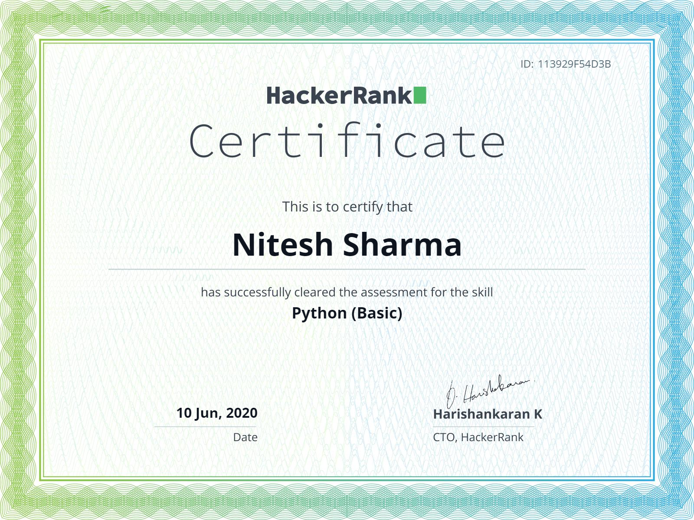
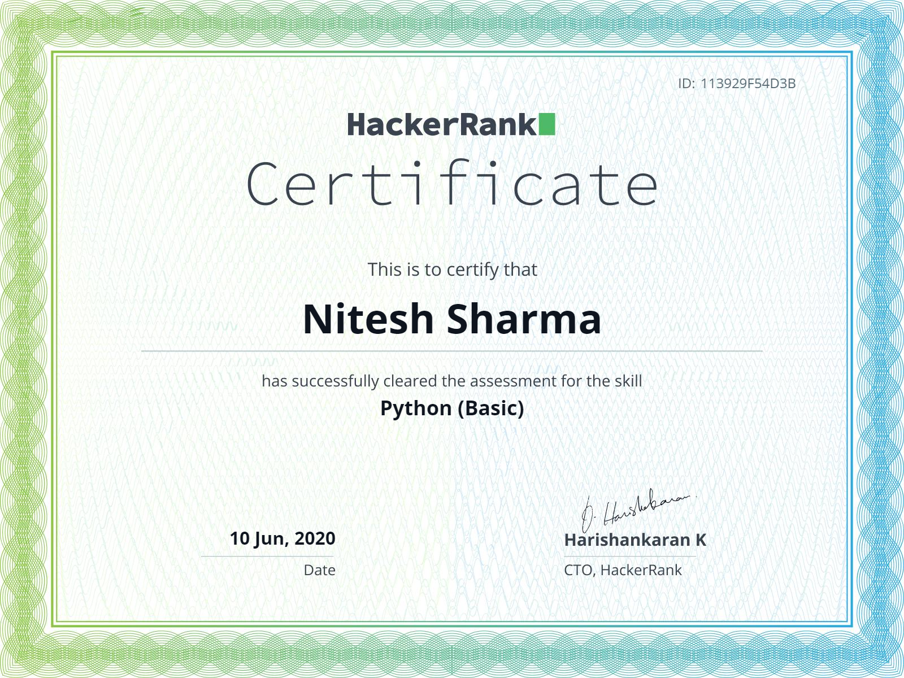

Coding Journey
I started coding in 3rd semester when I heard talks of my peers and friends regarding competetive coding and how important role it plays in the life of a Software engineer. I started coding in python but quickly switched to c++ as advised my mentors and seniors at college because python is way easier than many other object oriented programming languages. I didn't found myself comfortable in coding at start when I was not even able to solve very basic problems that now seems a joke to me so, hopefully things have changed a lot with time, at least now I can say that I am a 4 star coder at Codechef and that might seem to be average to you but I know that I've really learnt many new things in last 6-7 months. Anyways, I'll say that there is no alternative to hard work and that is the only that can make you rise and help you find the way to your dream. Well, I have simple dreams to get a good job in some MNC and then look into other things further in life. By the way, I forgot to tell you that I've also earned 6 stars on Hackerrank in problem solving.


 
